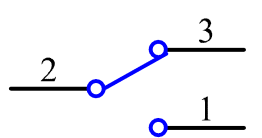

Nota
Ciao, benvenuto nella Community di SunFounder Raspberry Pi, Arduino e ESP32 Enthusiasts su Facebook! Unisciti a noi per approfondire Raspberry Pi, Arduino ed ESP32 insieme ad altri appassionati.
Perché unirsi?
Supporto tecnico esperto: Risolvi problematiche post-vendita e sfide tecniche grazie all’aiuto della nostra comunità e del nostro team.
Impara e condividi: Scambia consigli e tutorial per migliorare le tue competenze.
Anteprime esclusive: Ottieni un accesso anticipato ai nuovi annunci di prodotti e alle anteprime.
Sconti speciali: Goditi sconti esclusivi sui nostri nuovi prodotti.
Promozioni e giveaway: Partecipa a promozioni festive e concorsi con premi.
üëâ Pronto a esplorare e creare con noi? Clicca [Qui] e unisciti subito!
2.1.2 Interruttore a Slitta
Introduzione
In questa lezione, impareremo come utilizzare un interruttore a slitta. Di solito, l’interruttore a slitta viene saldato su una scheda PCB come interruttore di alimentazione, ma qui è necessario inserirlo nel breadboard, quindi potrebbe non essere completamente stabile. Lo utilizziamo sul breadboard per mostrare la sua funzione.
Componenti

Principio di Funzionamento
Interruttore a Slitta

Un interruttore a slitta, come suggerisce il nome, funziona facendo scorrere la leva per collegare o interrompere il circuito, e quindi cambiare i circuiti. I tipi più comuni sono SPDT, SPTT, DPDT, DPTT, ecc. L’interruttore a slitta è comunemente usato in circuiti a bassa tensione. È caratterizzato da flessibilità e stabilità ed è ampiamente applicato in strumenti elettrici e giocattoli elettrici.
Come funziona: imposta il pin centrale come fisso. Quando si sposta la slitta a sinistra, i due pin a sinistra si collegano; spostandola a destra, si collegano i due pin a destra. In questo modo funziona come un interruttore che connette o disconnette i circuiti. Vedi la figura sotto:

Il simbolo del circuito per l’interruttore a slitta è mostrato qui sotto. Il pin2 nella figura rappresenta il pin centrale.
Condensatore
Il condensatore è un componente in grado di immagazzinare energia sotto forma di carica elettrica o di produrre una differenza di potenziale (tensione statica) tra le sue piastre, proprio come una piccola batteria ricaricabile.
Unità standard di capacità
Microfarad (μF) 1μF = 1/1.000.000 = 0,000001 = \(10^{- 6}\) F
Nanofarad (nF) 1nF = 1/1.000.000.000 = 0,000000001 = \(10^{- 9}\)F
Picofarad (pF) 1pF = 1/1.000.000.000.000 = 0,000000000001 = \(10^{- 12}\)F
Nota
Qui utilizziamo un condensatore 104 (10 x 104PF). Come per le resistenze, i numeri sui condensatori aiutano a leggere i valori una volta montati. Le prime due cifre rappresentano il valore e l’ultima cifra indica il moltiplicatore. Così, 104 rappresenta un valore di 10 x 10^4 (in pF), pari a 100 nF.
Schema Elettrico
Collega il pin centrale dell’interruttore a slitta al GPIO17 e due LED ai pin GPIO22 e GPIO27 rispettivamente. Quando sposterai la slitta, vedrai i due LED accendersi alternativamente.


Procedura Sperimentale
Passo 1: Assembla il circuito.

Per Utenti Linguaggio C
Passo 2: Vai alla cartella del codice.
cd ~/davinci-kit-for-raspberry-pi/c/2.1.2
Passo 3: Compila.
gcc 2.1.2_Slider.c -lwiringPi
Passo 4: Esegui il file eseguibile.
sudo ./a.out
Mentre il codice è in esecuzione, collega l’interruttore a sinistra e il LED giallo si accenderà; spostalo a destra e si accenderà la luce rossa.
Nota
Se non funziona dopo l’esecuzione, o compare un messaggio di errore: "wiringPi.h: No such file or directory», fai riferimento a Il codice C non funziona?.
Codice
#include <wiringPi.h>
#include <stdio.h>
#define slidePin 0
#define led1 3
#define led2 2
int main(void)
{
// Se l'inizializzazione di wiringPi fallisce, stampa un messaggio
if(wiringPiSetup() == -1){
printf("setup wiringPi failed !");
return 1;
}
pinMode(slidePin, INPUT);
pinMode(led1, OUTPUT);
pinMode(led2, OUTPUT);
while(1){
// interruttore a slitta in alto, led1 acceso
if(digitalRead(slidePin) == 1){
digitalWrite(led1, LOW);
digitalWrite(led2, HIGH);
printf("LED1 on\n");
delay(100);
}
// interruttore a slitta in basso, led2 acceso
if(digitalRead(slidePin) == 0){
digitalWrite(led2, LOW);
digitalWrite(led1, HIGH);
printf(".....LED2 on\n");
delay(100);
}
}
return 0;
}
Spiegazione del Codice
if(digitalRead(slidePin) == 1){
digitalWrite(led1, LOW);
digitalWrite(led2, HIGH);
printf("LED1 on\n");
}
Quando l’interruttore a slitta viene spostato a destra, il pin centrale e quello di destra si collegano; il Raspberry Pi legge un livello alto sul pin centrale, quindi il LED1 si accende mentre LED2 si spegne.
if(digitalRead(slidePin) == 0){
digitalWrite(led2, LOW);
digitalWrite(led1, HIGH);
printf(".....LED2 on\n");
}
Quando l’interruttore a slitta viene spostato a sinistra, il pin centrale e quello di sinistra si collegano; il Raspberry Pi legge un livello basso, quindi il LED2 si accende mentre LED1 si spegne.
Per Utenti Python
Passo 2: Vai alla cartella del codice.
cd ~/davinci-kit-for-raspberry-pi/python
Passo 3: Esegui.
sudo python3 2.1.2_Slider.py
Durante l’esecuzione del codice, se l’interruttore è posizionato a sinistra, il LED giallo si accende; a destra, si accende la luce rossa.
Codice
Nota
Puoi Modificare/Reimpostare/Copiare/Eseguire/Arrestare il codice qui sotto. Tuttavia, prima di farlo, devi accedere al percorso del codice sorgente come davinci-kit-for-raspberry-pi/python.
import RPi.GPIO as GPIO
import time
# Imposta il pin #17 per l'interruttore a slitta, #22 per led1, #27 per led2
slidePin = 17
led1Pin = 22
led2Pin = 27
# Definisci una funzione di setup per alcune impostazioni
def setup():
# Imposta i pin GPIO in modalità BCM
GPIO.setmode(GPIO.BCM)
# Imposta slidePin come ingresso
# Imposta ledPin come uscita,
# e il livello iniziale su High (3.3v)
GPIO.setup(slidePin, GPIO.IN)
GPIO.setup(led1Pin, GPIO.OUT, initial=GPIO.HIGH)
GPIO.setup(led2Pin, GPIO.OUT, initial=GPIO.HIGH)
# Definisci una funzione principale per il processo principale
def main():
while True:
# interruttore a slitta alto, led1 acceso
if GPIO.input(slidePin) == 1:
print ('LED1 ON')
GPIO.output(led1Pin, GPIO.LOW)
GPIO.output(led2Pin, GPIO.HIGH)
# interruttore a slitta basso, led2 acceso
if GPIO.input(slidePin) == 0:
print (' LED2 ON')
GPIO.output(led2Pin, GPIO.LOW)
GPIO.output(led1Pin, GPIO.HIGH)
time.sleep(0.5)
# Definisci una funzione destroy per pulire tutto dopo
# che lo script è terminato
def destroy():
# Spegni i LED
GPIO.output(led1Pin, GPIO.HIGH)
GPIO.output(led2Pin, GPIO.HIGH)
# Libera le risorse
GPIO.cleanup()
# Se esegui questo script direttamente, esegui:
if __name__ == '__main__':
setup()
try:
main()
# Quando viene premuto 'Ctrl+C', il programma
# destroy() verrà eseguito.
except KeyboardInterrupt:
destroy()
Spiegazione del Codice
if GPIO.input(slidePin) == 1:
GPIO.output(led1Pin, GPIO.LOW)
GPIO.output(led2Pin, GPIO.HIGH)
Quando l’interruttore a slitta viene spostato a destra, il pin centrale e quello di destra sono connessi; il Raspberry Pi rileva un livello alto sul pin centrale, quindi LED1 si accende e LED2 si spegne.
if GPIO.input(slidePin) == 0:
GPIO.output(led2Pin, GPIO.LOW)
GPIO.output(led1Pin, GPIO.HIGH)
Quando l’interruttore a slitta viene spostato a sinistra, il pin centrale e quello di sinistra sono connessi; il Raspberry Pi rileva un livello basso, quindi LED2 si accende e LED1 si spegne.